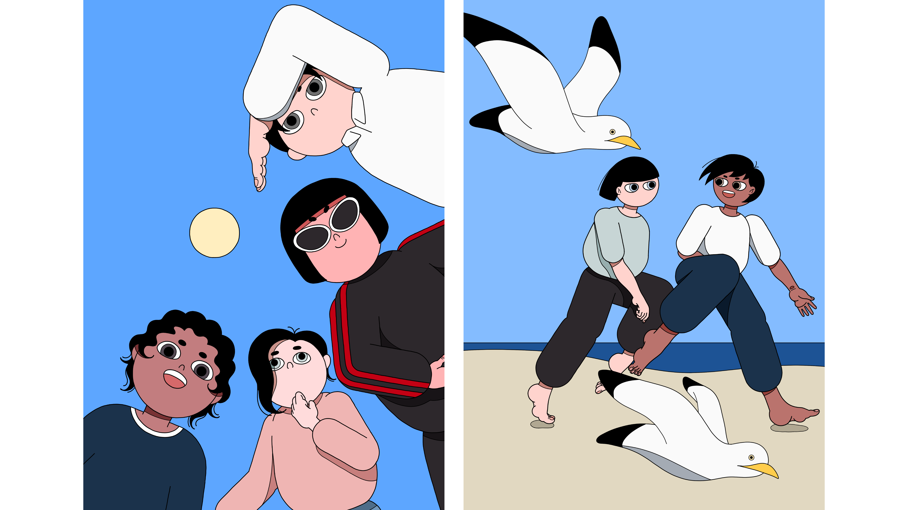
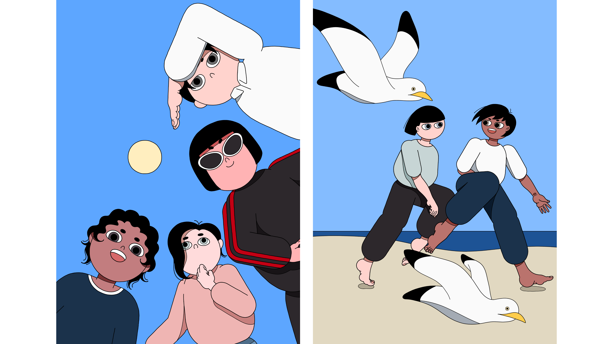

Illustrator
Ojima Yuu
作家Ojima Yuu（おじまゆー）として活動中。シンプルな線と余白を活用し、大人が愛せるポップなスタイルが特徴的。アートイベントでの原画販売などを行っている。
 


Others
LINEスタンプ
オリジナルキャラクターの「たまごおじさん」のイラストを使用したLINEスタンプ。普段使用なものからユニークなものまで展開し、生活の中で楽しく使用できる。
パターンは32あり、登場するキャラクターは3種類。暖色系を多く使い親近感を出している。
Others
Short animation『日没』『黄昏時』『考え事』
自然音と共に「落ち着く一瞬」を切り抜いたショートアニメーション。SNSで発信し、忙しい毎日の一部にリラックスできる瞬間を提供することを目的としている。